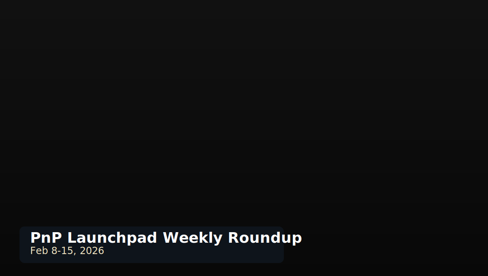

<!doctype html>
<html lang="en">
  <head>
    <meta charset="utf-8" />
    <meta name="viewport" content="width=device-width, initial-scale=1" />
    <title>On the Launchpad, Feb, 8-15, 2026 | PnP Launchpad</title>
    <link rel="stylesheet" href="assets/styles.css" />
  </head>
  <body>
    <div id="app"></div>
    <script src="assets/app.js"></script>
    <script>
      const el = document.getElementById('app');
      el.innerHTML = `
        ${PNPL.header('Blog')}
        <main>
          <article class="blog-post-card blog-post-full">
            
            <div class="blog-post-body">
              <p class="meta">Published: February 15, 2026</p>
              <h1>On the Launchpad, Feb, 8-15, 2026: Dungeons, Air Combat, Tower Defense, Monsters, Cats, and More!</h1>

              <p><strong>Dungeon depth is leading the charge.</strong> <a href="https://www.kickstarter.com/projects/timetodice/red-dungeon" target="_blank" rel="noreferrer noopener">Red Dungeon</a> keeps things lean with a standard 52-card deck while still delivering high-stakes rebellion energy, and <a href="https://www.kickstarter.com/projects/littlerocketgames/one-card-dungeon-hells-door" target="_blank" rel="noreferrer noopener">One Card Dungeon - Hell's Door</a> pushes compact dungeon design further with expansion-focused content.</p>

              <p><strong>Strategy fans have plenty to chew on.</strong> <a href="https://www.kickstarter.com/projects/105281170/fliegerkorps" target="_blank" rel="noreferrer noopener">Fliegerkorps</a> offers solo WWII air corps command decisions, while <a href="https://www.kickstarter.com/projects/twoacornsgames/dice-horde" target="_blank" rel="noreferrer noopener">Dice Horde</a> goes for quick, dice-driven tower defense pressure with low setup friction.</p>

              <p><strong>Big-theme adventure is alive and well.</strong> <a href="https://www.kickstarter.com/projects/nukazombee/beastward-monster-hunt-rpg-boardgame?ref=1q7wvl" target="_blank" rel="noreferrer noopener">Beastward</a> leans into monster-hunting campaign momentum, <a href="https://www.kickstarter.com/projects/rollingrhinogames/catsaga" target="_blank" rel="noreferrer noopener">Cat Saga</a> brings co-op narrative choices to the front, and <a href="https://gamefound.com/en/projects/florianfiedler/essence-the-grim-expeditions" target="_blank" rel="noreferrer noopener">Essence: The Grim Expeditions</a> adds legacy-style tactical intensity.</p>

              <p><strong>And for players watching value and variety:</strong> <a href="https://itch.io/s/180328/-birthday-sale-" target="_blank" rel="noreferrer noopener">Raoul Schaupp's Birthday Sale</a> keeps the promo lane active this week, while projects like <a href="https://www.kickstarter.com/projects/keepersoffun/orman-a-roll-and-plant-print-and-play-game" target="_blank" rel="noreferrer noopener">ORMAN</a> and <a href="https://www.kickstarter.com/projects/radek-ignatow/king-0" target="_blank" rel="noreferrer noopener">KING</a> round out the slate with lighter and heavier strategy flavors.</p>

              <p><strong>Bottom line:</strong> this is one of those weeks where nearly every PnP taste profile has something worth backing, bookmarking, or tracking.</p>

              <p><a href="blog.html" target="_blank" rel="noreferrer noopener">Back to Blog</a></p>
            </div>
          </article>
        </main>
        ${PNPL.footer()}
      `;
      PNPL.setMainLinksNewTab();
    </script>
  </body>
</html>
